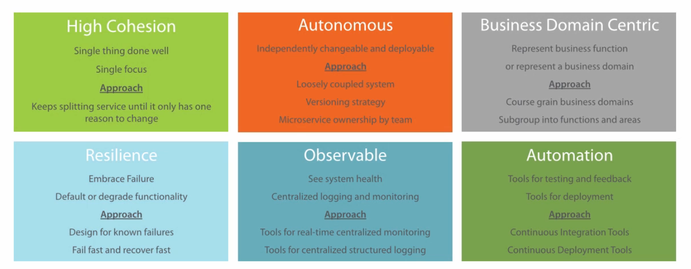

Microservices Introduction¶
Microservice is a software architecture style, in which complex applications are composed of small, autonomous process communicating with each other using language-agnostic API, which is a very common cloud pattern.
Contents
Microservices Design Principles¶
High cohesion¶
High cohesion means single focus and single responsibility. It follows SOLID principle, which means service only change for one reason.
Autonomous¶
Loose coupling
Honor contracts and interfaces
Stateless
Independently changeable
Independently deployable
Backwards compatible
Concurrent development
Approach:
Communication by network: synchronous, asynchronous (publish/subscribe to events)
Technology agnostic API
Avoid client libraries
Contracts between services: fixed and agreed interfaces, shared models, clear input and output
Avoid chatty exchanges between services
Avoid sharing between services: databases, shared libraries
Microservice ownership by team: responsibility to make autonomous, agreeing contracts between teams, responsible for long-term maintenance, collaborative development (communicate contract requirements, communicate data requirements), concurrent development
Versioning: avoid breaking changes, backwards compatibility, integration tests, have a versioning strategy (concurrent versions: old and new; semantic versioning: Major.Minor.Patch (e.g. 15.1.2); coexisting endpoints: /V2/customer/)
Business Domain Centric¶
Service represents business function
Scope of service and identify boundaries (Bounded context from DDD)
Shuffle code if required: group related code into a service, aim for high cohesion
Responsive to business change
Approach:
Identify business domains in a coarse manner, review sub groups of business functions or areas
Review benefits of splitting further and fix incorrect boundaries: merge or split
Agree a common language
Microservices for data (CRUD) or functions
Explicit interfaces for outside world
Splitting using technical boundaries
Resilience¶
Embrace failure: start another service rather than spend energy to protect service
Multiple instances: register on startup, deregister on failure
Types of failure: exceptions & errors, delays, unavailability
Validate input: service to service, client to service
Approach
Design for known failures
Failure of downstream systems: e.g. other services internal or external
Degrade functionality on failure detection
Default functionality on failure detection
Design system to fail fast
Use timeouts: use for connected systems, timeout our requests after a threshold, service to service, service to other systems, standard timeout length, adjust length on a case by case basis
Monitor and log timeouts
Observable¶
System health: status, logs, errors
Centralized monitoring & logging
Distributed transactions
Quick problem solving
Quick deployment requires feedback
Data used for capacity planning & scaling
To understand what is actually used
Monitor business data
Approach:
Real-time monitoring
Monitor the host: CPU, memory, disk usage, etc.
Expose metrics within the services: response times, timeouts, exceptions and errors
Business data related metrics: e.g. number of orders, average time from basket to checkout
Collect and aggregate monitoring data: monitoring tools that provide aggregation, monitoring tools that provide drill down options
Monitoring tool that can help visualise trends, compare data across servers, trigger alerts
When to log: startup or shutdown, code path milestones (requests, responses and decisions), timeouts, exceptions and errors
Structured logging: level (information, error, debug, statistic), date and time, correlation id, host name, service name and service instance, message
Traceable distributed transactions: correlation id passed service to service
Automation¶
Tools to reduce testing, provide quick feedback, and quick deployment
Microservices Development Strategy¶
Synchronous communication¶
Request response communication: client to service, service to service, service to external
Remote procedure call: sensitive to change
HTTP: work across the internet, firewall friendly
REST: CRUD using HTTP verbs, natural decoupling, open communication protocol, REST with HATEOAS (Hypermedia As The Engine Of Application State)
Synchronous issues: both parties have to be available, performance subject to network quality, clients must know location of service (hostport)
Asynchronous communication¶
Event based: mitigates the need of client and service availability, decouples client and service
Message queueing protocol: message Brokers, subscriber and publisher are decoupled, microsoft message queuing (MSMQ), RabbitMQ, ATOM (HTTP to propagate events)
Asynchronous challenge: complicated, reliance on message broker, visibility of the transaction, managing the messaging queue
Real world systems: would use both synchronous and asynchronous
Hosting Platforms: Registration and Discovery¶
The main problem to resolve: host, port and version
Service registry database
Register on startup
Deregister service on failure
Cloud platforms make it easy
Local platform registration options: self registration, third-party registration
Local platform discovery options: client-side discovery, server-side discovery
Observable Microservices: Monitoring Tech¶
Centralised tools: Nagios, PRTG, New Relic
Desired features: metrics across servers, automatic or minimal configuration, client libraries to send metrics, test transactions support, alerting
Network monitoring
Standardise monitoring: central tool, preconfigured virtual machines or containers
Real-time monitoring
Observable Microservices: Logging Tech¶
Portal for centralised logging data: Elastic log, Log stash, Splunk, Kibana, Graphite
Client logging libraries: Serilog and many more…
Desired features: structured logging, logging across servers, automatic or minimal configuration, correlation (context id) for transactions,
Standardise logging: central tool, template for client library
Microservices Performance: Caching¶
Caching to reduce: client calls to services, service calls to databases, service to service calls
API gateway (proxy) level
Client & service side
Considerations: simple to setup and manage, be careful about data leaks
Microservices Performance: API Gateway¶
Help with performance: load balancing, caching
Help with: creating central entry point, exposing services to clients, one interface to many services, dynamic location of services, routing to specific instance of service, service registry database
Security: dedicated security service, central security vs service level
For Greenfield Microservices¶
Start off with monolithic design: high level, evolving seams, develop areas into modules, boundaries start to become clearer, refine and refactor design, split further when required
Modules become services
Shareable code libraries promote to service
Review microservice principles at each stage
Prioritise by: minimal viable product, customer needs and demand
Microservices Provisos¶
Accepting initial expense: longer development times, cost and training for tools and new skills
Skilling up for distributed systems: handling distributed transactions, handling reporting
Additional testing resource: latency and performance testing, testing for resilience
Improving infrastructure: security, performance, reliance
Overhead to mange microservices
Patterns¶
Saga¶
A saga is a class that represents a running instance of a business process.
Depending on the actual capabilities of the bus you use, the saga can be persisted, suspended and resumed as appropriate.
See more details in the following URL: https://docs.particular.net/nservicebus/sagas/
Event sourcing & CQRS¶
Event sourcing contain all the event and changes.
By adding event sourcing to an application, you get a hold of raw data.
By combining event sourcing and CQRS you end up with raw business events stored in the command stack properly denormalized for the sake of the application core functions.
At any time, though, you can add an extra module that reads raw data and transforms that into other meaningful chunks of information for whatever business purpose you might have.
When it comes to highlighting the benefits of event sourcing, the first point usually mentioned is this: with events you never miss a thing of what happens within the system.
In a create, read, update, delete (CRUD) system, you typically have one representation of data - mostly relational - and one or more simple projects that most of the time just adapter tabular data to the needs of the presentation layer.
With event sourcing, you take this model much further, and lowering the abstraction level of the stored data is the key factor. The more domain-accurate information you store, the richer and more numerious projections you can build at any later time.
An approach to persistence that concentrates on persisting all the changes to a persistent state, rather than persisting the current application state itself. Combined the usage of snapshot.
See details in article: https://msdn.microsoft.com/en-us/magazine/mt793267.aspx
Data Integration patterns¶
The four most common design patterns for data integration are broadcast, aggregation, bidirectional synchronization and correlation.
Circuit breaker pattern¶
Circuit breaker pattern prevent repeatedly trying to execute an operation that is likely to fail
The circuit breaker is a proxy that monitors the number of recent failures
Prevents wasting valuable resources because of the wait
Normally, the client has some retry logic
Multiple tenants app¶
Per-tenant cost
Scale: number of tenants, data volume, workload
Tenant isolation: security, performance, lifetime management, etc
business continuity, disaster recovery
customization per-tenant (for some ISVs)

Other patterns¶
Actor Model: http://www.brianstorti.com/the-actor-model/
Content Delivery Network (CDN) pattern
Uploading to storage: Do not use web server to do upload, use storage service
Scale up & scale out:

Tools¶
SignalR¶
ASP.NET SignalR is a new library for ASP.NET developers that makes it incredibly simple to add real-time web functionality to your applications. It’s the ability to have your server-side code push content to the connected clients as it happens, in real-time.
You may have heard of WebSockets, a new HTML5 API that enables bi-directional communication between the browser and server. SignalR will use WebSockets under the covers when it’s available, and gracefully fallback to other techniques and technologies when it isn’t, while your application code stays the same.
SignalR also provides a very simple, high-level API for doing server to client RPC (call JavaScript functions in your clients’ browsers from server-side .NET code) in your ASP.NET application, as well as adding useful hooks for connection management, e.g. connect/disconnect events, grouping connections, authorization.
Service bus¶

NServiceBus: .net service bus. Keep the underlying transpose abstract
MSMQ queues: Computer management -> Service and Applications -> Message Queuing -> Private queues
RabbitMQ: supports multiple platforms, MSMQ is windows native
Sql server
Azure: Queues, Service bus
Written by Binwei@Oslo